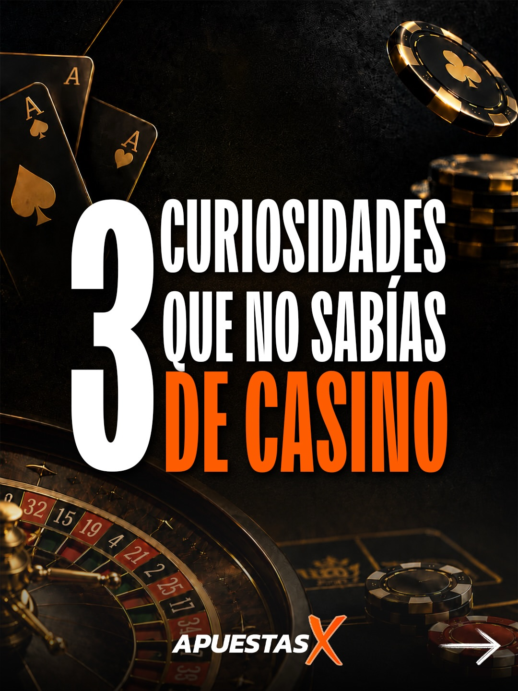
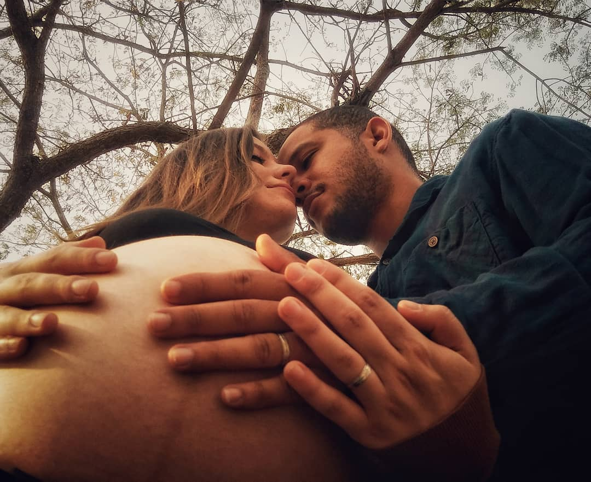
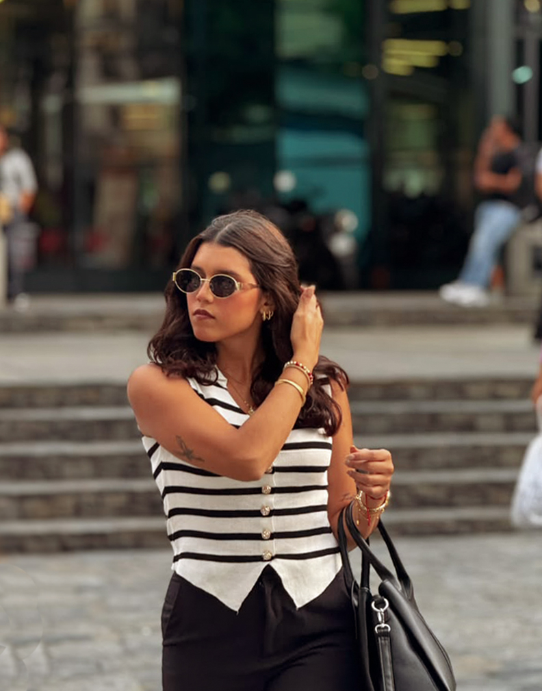
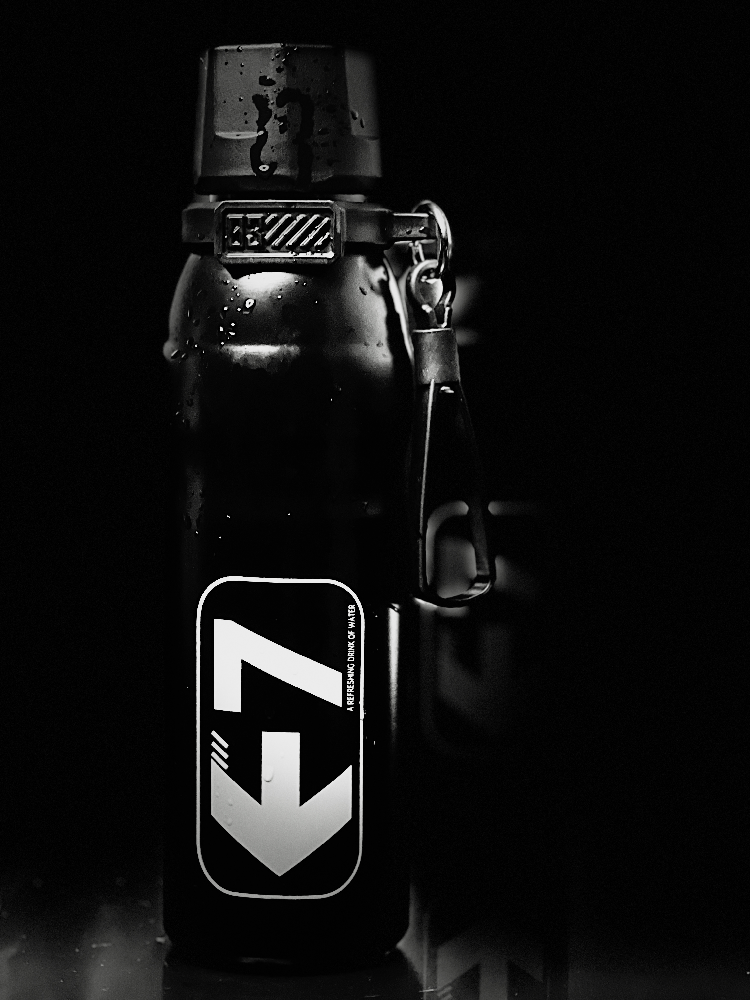

Lo que Hago
Diseño Gráfico & Estrategia Visual
Dicen que la primera impresión es la que cuenta, y en digital no hay segunda oportunidad. Detrás de cada pieza hay una estrategia pensada para enganchar. Te invito a pasearte por este recorrido de identidad, publicidad y redes sociales, donde cuido el color, la tipografía y los detalles para que cada marca destaque.

ApuestasX – Content Marketing
Diseño de carrusel enfocado en datos curiosos e infoentretenimiento.

Alma Gourmet – Campaña Visual
Composición publicitaria limpia con enfoque en la frescura de ingredientes.

El Shaddai – Identidad Institucional
Desarrollo de logo, paleta cálida y marca.
Fotografía & Dirección Visual
La fotografía es el equilibrio perfecto entre técnica, luz y concepto. Trabajo la dirección visual integrando retratos familiares, estética urbana y producción de producto. Haz clic en el que prefieras para ver la galería completa.

Maternidad & Conexión Familiar
Juego de contraluces, detalles que transmiten emoción pura y profundidad de campo para resaltar la conexión.

Lifestyle & Estética de Ciudad
Retrato urbano con contraste entre luces naturales y ambiente de ciudad.

E7 – Termo Deportivo & Estética Minimalista
Manejo de iluminación de contraste y fondo oscuro para resaltar texturas, gotas de agua y detalles metálicos del empaque.
Creación & Edición de Video
Producir contenido dinámico para redes sociales va mucho más allá de unir clips. Se trata de crear hooks de alta retención, motion graphics y composiciones que reflejen la verdadera identidad de cada marca. Te presento mis trabajos audiovisuales:
ApuestasX — Promo de Entrada
Composición: Uso de efectos fluorescentes, transiciones rítmicas con zoom dinámico y llamado a la acción inicial para captura inmediata de atención.
Infoentretenimiento — Storytelling
Composición: Encuadre vertical en primer plano con subtítulos dinámicos de alto contraste en el centro visual para maximizar la retención sin audio.
ApuestasX — Caso de Éxito
Composición: Hook con elementos flotantes animados (emojis y texto resaltado), sincronización de cortes al pulso de la voz y gradación de color cálida.